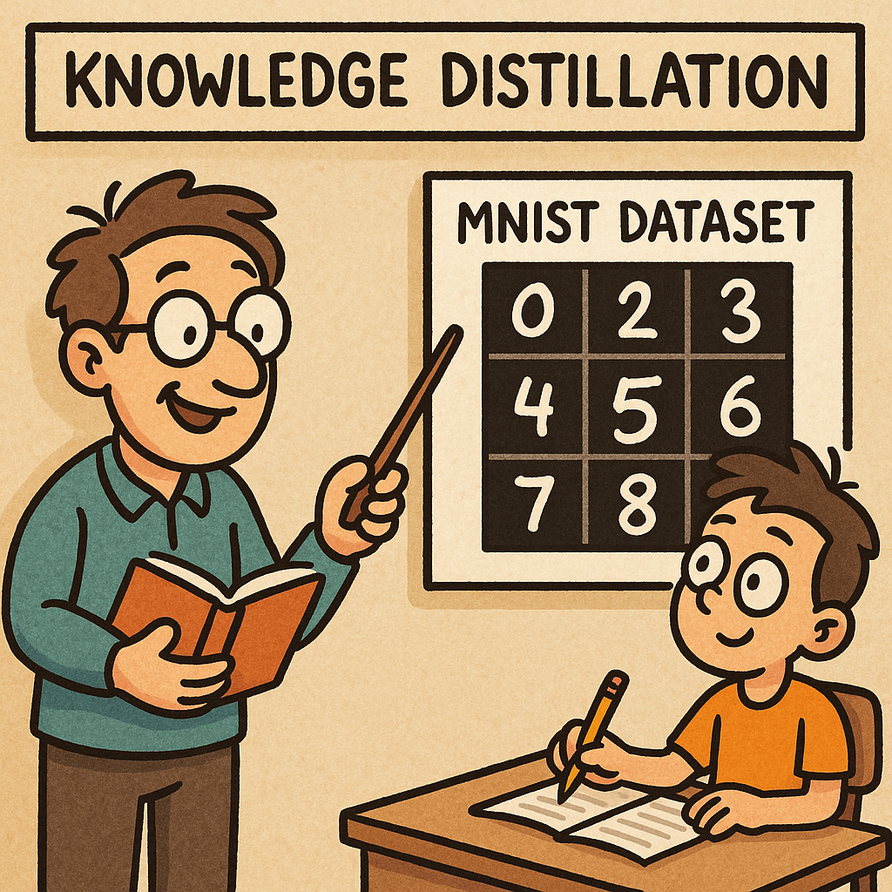
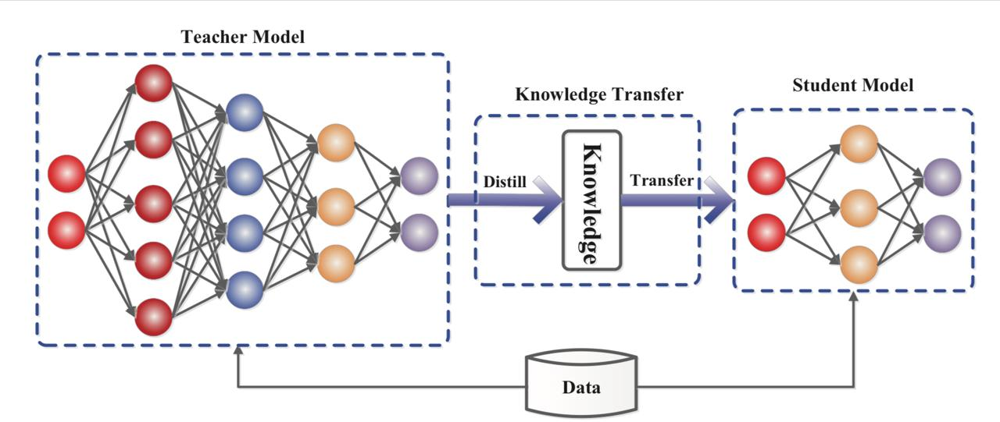
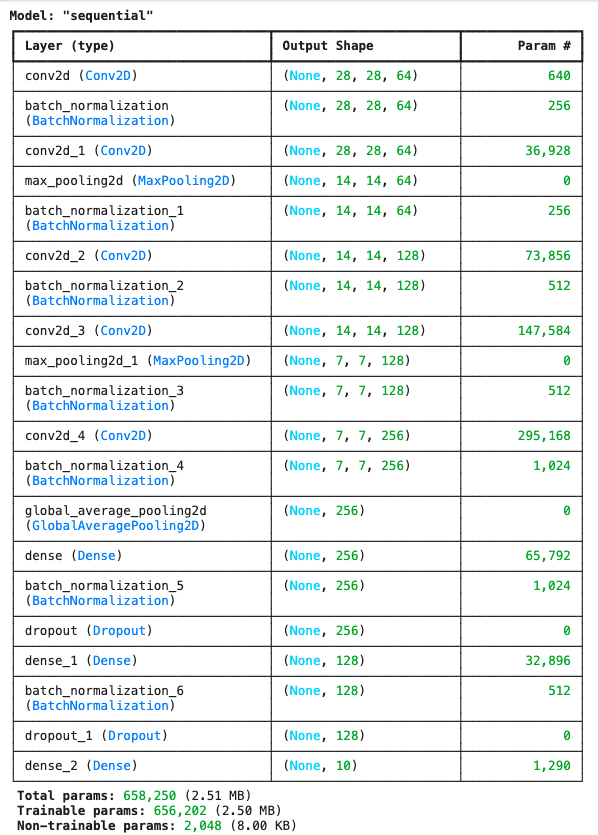
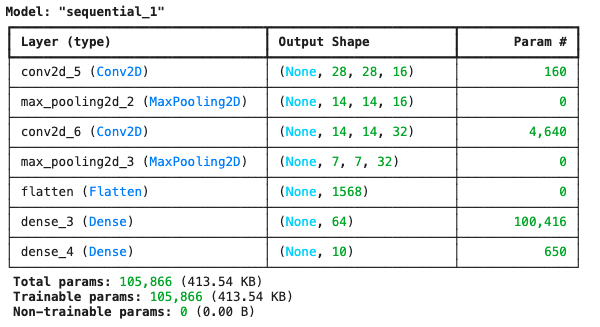
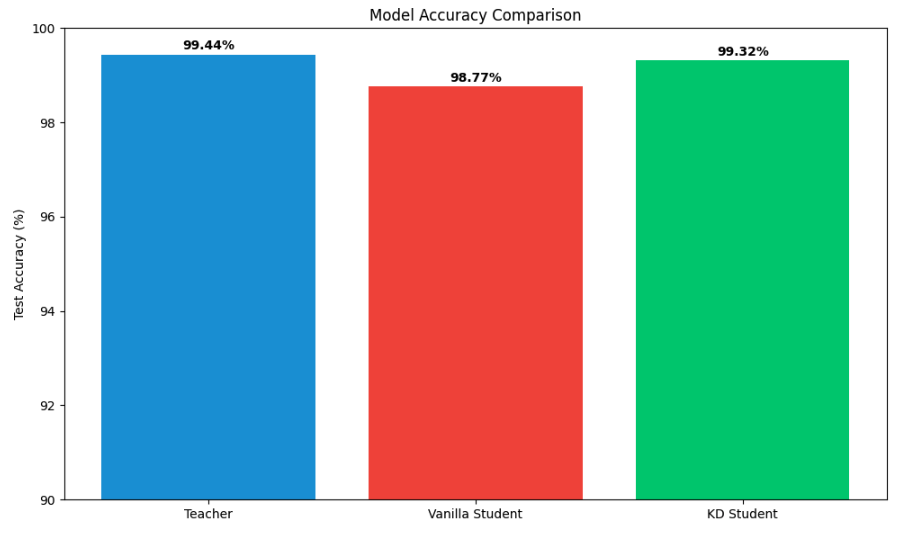
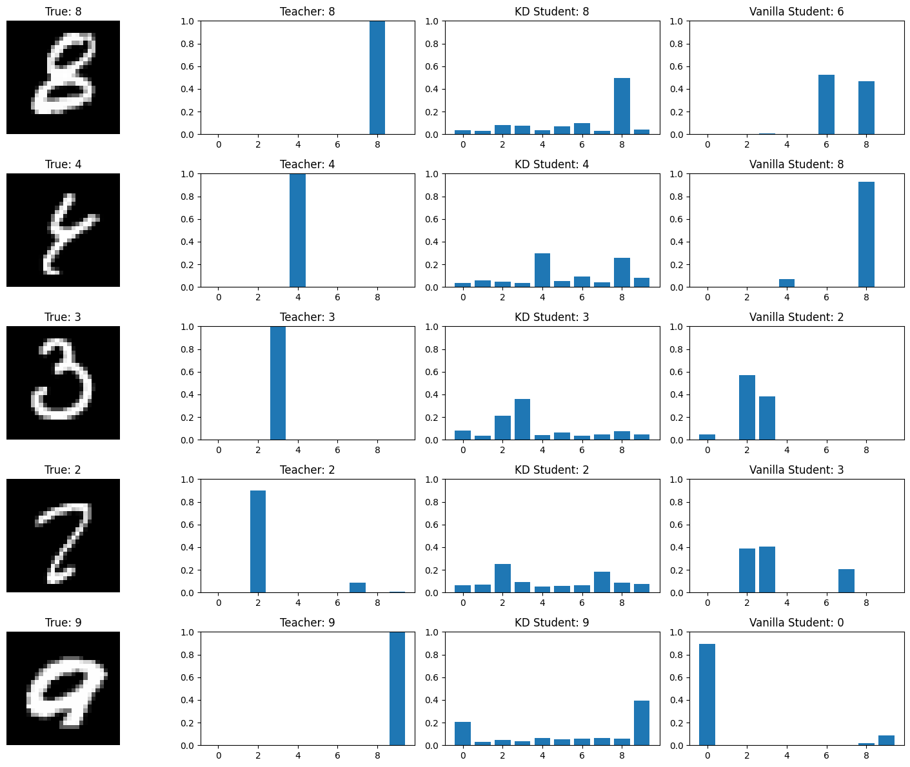
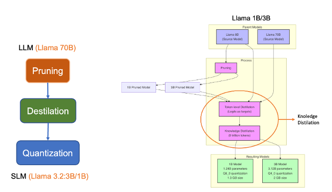

Knowledge Distillation in Practice
From MNIST to LLMs

Introduction to Knowledge Distillation
Knowledge distillation is a powerful technique in machine learning that enables the transfer of knowledge from a large, complex model (the “teacher”) to a smaller, more efficient model (the “student”). This process allows us to create compact models that maintain much of the performance of their larger counterparts while being significantly faster and requiring fewer computational resources.
Why Knowledge Distillation Matters
In today’s AI landscape, models are becoming increasingly large and complex. While these models achieve remarkable performance, they often require substantial computational resources, making deployment challenging in resource-constrained environments such as mobile devices, edge computing systems, or real-time applications. Knowledge distillation addresses this challenge by:
- Reducing Model Size: Creating smaller models with fewer parameters
- Improving Inference Speed: Enabling faster predictions in production
- Lowering Computational Costs: Reducing memory and processing requirements
- Maintaining Performance: Preserving much of the original model’s accuracy
- Enabling Edge Deployment: Making AI accessible on resource-limited devices
The Teacher-Student Paradigm
The core concept of knowledge distillation revolves around the teacher-student relationship:
- Teacher Model: A large, well-trained model with high capacity and performance
- Student Model: A smaller, more efficient model trained to mimic the teacher’s behavior
- Knowledge Transfer: The process of transferring the teacher’s “dark knowledge” to the student

See paper: “Knowledge Distillation: A Survey, Jianping Gou, Baosheng Yu, Stephen J. Maybank, Dacheng Tao, 2021
Theoretical Foundations
Soft Targets vs. Hard Targets
Traditional supervised learning uses “hard targets” - one-hot encoded labels that provide limited information. For example, in MNIST digit classification, the label for the digit “5” would be represented as [0, 0, 0, 0, 0, 1, 0, 0, 0, 0].
Knowledge distillation leverages “soft targets” - the probability distributions produced by the teacher model. These soft targets contain richer information about the relationships between classes. For instance, the teacher might output [0.01, 0.02, 0.01, 0.05, 0.1, 0.78, 0.02, 0.01, 0.0, 0.0] for a “5”, indicating that it’s most confident about “5” but also considers “4” somewhat similar.
The Temperature Parameter
The temperature parameter (τ) is crucial in knowledge distillation. It controls the “softness” of the probability distribution by modifying the softmax function:
P(class_i) = exp(z_i / τ) / Σ_j exp(z_j / τ)Where:
- z_i are the logits (pre-softmax outputs)
- τ is the temperature parameter
Effects of Temperature:
- τ = 1: Standard softmax (normal sharpness)
- τ > 1: Softer distribution (more uniform, reveals class relationships)
- τ < 1: Sharper distribution (more peaked, less informative)
In our implementation, we use a temperature of 5.0, which creates softer distributions that effectively transfer the teacher’s “dark knowledge” to the student.
Distillation Loss Function
The distillation loss combines two components:
- Distillation Loss (L_KD): Measures how well the student mimics the teacher’s soft targets
- Student Loss (L_CE): Traditional cross-entropy loss with hard targets
L_total = α * L_CE + (1 - α) * L_KDWhere α is a weighting parameter that balances the two objectives, in our implementation, we use α = 0.3, giving more weight to the soft targets from the teacher.
The distillation loss is typically computed using the KL divergence:
L_KD = τ² * KL_divergence(Teacher_soft_targets, Student_soft_targets)The τ² factor compensates for the gradient scaling effect of temperature. This is crucial for stable training.
Implementation with TensorFlow and MNIST
Dataset Overview
MNIST is an ideal dataset for learning knowledge distillation:
- 60,000 training images of handwritten digits (0-9)
- 10,000 test images
- 28x28 grayscale images
- 10 classes (digits 0-9)
- Well-established baseline performances
Teacher Model Architecture
Our teacher model has substantial capacity with multiple convolutional layers, batch normalization, and dropout for regularization:
def build_teacher_model():
model = models.Sequential([
layers.Conv2D(64, 3,
activation='relu',
padding='same',
input_shape=(28, 28, 1)),
layers.BatchNormalization(),
layers.Conv2D(64, 3, activation='relu', padding='same'),
layers.MaxPooling2D(2, 2),
layers.BatchNormalization(),
layers.Conv2D(128, 3, activation='relu', padding='same'),
layers.BatchNormalization(),
layers.Conv2D(128, 3, activation='relu', padding='same'),
layers.MaxPooling2D(2, 2),
layers.BatchNormalization(),
layers.Conv2D(256, 3, activation='relu', padding='same'),
layers.BatchNormalization(),
layers.GlobalAveragePooling2D(),
layers.Dense(256, activation='relu'),
layers.BatchNormalization(),
layers.Dropout(0.5),
layers.Dense(128, activation='relu'),
layers.BatchNormalization(),
layers.Dropout(0.5),
layers.Dense(10, activation='softmax')
])
return model
This architecture achieved 99.44 % accuracy on MNIST.
Student Model Architecture
Our student model is intentionally much simpler, with fewer layers and significantly fewer parameters:
def build_student_model():
model = models.Sequential([
layers.Conv2D(16, 3,
activation='relu',
padding='same',
input_shape=(28, 28, 1)),
layers.MaxPooling2D(2, 2),
layers.Conv2D(32, 3, activation='relu', padding='same'),
layers.MaxPooling2D(2, 2),
layers.Flatten(),
layers.Dense(64, activation='relu'),
layers.Dense(10, activation='softmax')
])
return model
The student model has fewer parameters than the teacher (105K versus 658K), or 6.2 times smaller.
Knowledge Distillation Implementation
In our implementation, we use a custom training loop that explicitly calculates both hard and soft losses:
# Forward pass
with tf.GradientTape() as tape:
predictions = kd_student(x_batch, training=True)
# Hard target loss (cross-entropy with true labels)
hard_loss = tf.keras.losses.categorical_crossentropy(y_hard_batch, predictions)
# Soft target loss (KL divergence with teacher predictions)
soft_loss = tf.keras.losses.kullback_leibler_divergence(y_soft_batch, predictions)
# Combined loss with temperature scaling factor for soft loss
loss = alpha * hard_loss + (1 - alpha) * soft_loss * (temperature ** 2)Key components of our implementation:
- Temperature Scaling: We apply a temperature of 5.0 to soften the teacher’s outputs
- Alpha Weighting: We use α = 0.3 to prioritize learning from the teacher’s soft targets
- KL Divergence: This loss function helps the student match the teacher’s probability distributions
- Temperature Correction: We multiply the soft loss by τ² to correct for gradient scaling
Training Process
Our implementation follows these steps:
- Train the Teacher: First, we train the complex teacher model using early stopping and a reduced learning rate.
- Train a Vanilla Student: We train a student model normally on the hard labels for comparison.
- Generate Soft Targets: We use the teacher to create softened probability distributions.
- Train the Distilled Student: We train another student using our custom distillation training loop.
- Evaluate and Compare: We compare the performance, size, and speed of all three models.
Results and Analysis
Our implementation typically shows these results:
- Teacher Model: 99.44% accuracy, largest size, slowest inference (0.8632 seconds)
- Vanilla Student: 98.77% accuracy, smaller size, faster inference (0.3579 seconds)
- Distilled Student: 99.32% accuracy, same size as vanilla student, but better performance (+0.55%) and faster inference than the Teacher (0.5467 seconds)

These results demonstrate the key benefit of knowledge distillation: the distilled student achieves performance closer to the teacher while maintaining the efficiency benefits of the smaller architecture.
Visualizing Distillation Benefits
We analyze the models on challenging examples where the teacher succeeds but the vanilla student fails. This reveals how knowledge distillation enables students to handle complex cases by learning the teacher’s “dark knowledge.”

Advanced Techniques
Feature-Based Distillation
Beyond output-level distillation, we can transfer knowledge from intermediate layers:
def feature_distillation_loss(teacher_features, student_features):
"""Distill knowledge from intermediate feature maps"""
loss = 0
for t_feat, s_feat in zip(teacher_features, student_features):
# Align dimensions if necessary
s_feat_aligned = align_feature_dimensions(s_feat, t_feat.shape)
loss += tf.keras.losses.MSE(t_feat, s_feat_aligned)
return lossAttention-Based Distillation
Transfer attention patterns from teacher to student:
def attention_distillation_loss(teacher_attention, student_attention):
"""Distill attention mechanisms"""
return tf.keras.losses.MSE(teacher_attention, student_attention)Practical Tips for Advanced Distillation
- Layer Alignment: When using feature distillation, carefully align the feature dimensions
- Feature Selection: Not all features are equally important; focus on the most informative ones
- Multi-Teacher Distillation: Combine knowledge from multiple teachers for better results
- Online Distillation: Train teacher and student simultaneously for mutual improvement
Scaling to Large Language Models
Challenges in LLM Distillation
Scaling knowledge distillation to Large Language Models presents unique challenges:
- Model Size: LLMs have billions of parameters, making distillation computationally expensive
- Sequence Generation: Unlike classification, LLMs generate sequences, requiring sequence-level distillation
- Vocabulary Differences: Teacher and student may have different vocabularies
- Context Length: Handling variable-length sequences and attention patterns
- Multi-task Learning: LLMs perform multiple tasks simultaneously
LLM Distillation Techniques
1. Sequence-Level Distillation
Instead of token-level predictions, match entire sequence probabilities:
def sequence_level_distillation(teacher_logits, student_logits, sequence_lengths):
"""Distill at the sequence level for better coherence"""
teacher_probs = tf.nn.softmax(teacher_logits / temperature)
student_probs = tf.nn.softmax(student_logits / temperature)
# Mask out padding tokens
mask = create_sequence_mask(sequence_lengths)
return masked_kl_divergence(teacher_probs, student_probs, mask)2. Recent LLM Distillation Examples
- DistilBERT: 40% smaller than BERT, retains 97% of performance.
- TinyBERT: 7.5x smaller and 9.4x faster than BERT-base
- MiniLM: Uses deep self-attention distillation for efficient transfer.
- Distil-GPT2: Compressed version of GPT-2 with minimal performance loss
- Llama 3.2 3B and 1B: Distilled from Llama 3.2 models (70B/8B parameters)
3. Distilling Reasoning Abilities
Modern approaches focus on transferring reasoning abilities, not just predictions:
- Chain-of-Thought Distillation: Transfer step-by-step reasoning process
- Explanation-Based Distillation: Use teacher’s explanations to guide student learning
- Rationale Extraction: Identify key reasoning patterns for targeted transfer
From MNIST to Real-World LLMs: Llama 3.2 Case Study
- Teacher Model: The larger Llama 3.2 models (70B/8B parameters) serve as the teachers
- Student Model: Llama 3.2 3B and 1B are the distilled student models. They were created using pruning techniques, which systematically remove less meaningful connections (weights) in the neural network.

Key Points
- Scale Difference: The parameter reduction from 70B to 3B (~23x) or 1B (~70x) demonstrates industrial-scale distillation
- Performance Preservation: Despite massive size reduction, the smaller models maintain impressive capabilities:
- The 3B model preserves most of the reasoning abilities of larger models.
- The 1B model remains highly functional for many tasks.
- Practical Benefits:
- The 1B model can run on consumer laptops and even some mobile devices.
- The 3B model offers a balance of performance and accessibility.
- Distillation Techniques Used:
- Meta likely used a combination of response-based and feature-based distillation.
- They may have employed temperature scaling and specialized loss functions similar to what we demonstrated in our MNIST example.
- The principles we covered (soft targets, temperature, loss weighting) all apply at this larger scale.
While our MNIST example demonstrates the application of knowledge distillation principles using a simple dataset, these same principles can be applied directly to state-of-the-art language models.
Meta’s Llama 3.2 family provides a perfect real-world example:
| Model | Parameters | Size Reduction | Use Case |
|---|---|---|---|
| Llama 3.2 70B | 70 billion | (Teacher) | Data centers, high-performance applications |
| Llama 3.2 8B | 8 billion | ~9x | Server deployment, high-end workstations |
| Llama 3.2 3B | 3 billion | ~23x | Consumer laptops, desktop applications |
| Llama 3.2 1B | 1 billion | ~70x | Edge devices, mobile applications, embedded systems |
The 3B and 1B models represent successful distillations of the larger models, preserving core capabilities while dramatically reducing computational requirements. This demonstrates the industrial importance of knowledge distillation techniques we’ve explored.
It is possible to note that while the underlying principles remain the same as our MNIST example, industrial LLM distillation includes additional techniques:
- Distillation-Specific Data: Carefully curated datasets designed to transfer specific capabilities
- Multi-Stage Distillation: Gradual compression through intermediate models (70B → 8B → 3B → 1B)
- Task-Specific Fine-Tuning: Optimizing smaller models for specific use cases after distillation
- Custom Loss Functions: Specialized loss terms to preserve reasoning patterns and generation quality
Despite these additional complexities, the core concept remains the same: using a larger, more capable model to guide the training of a smaller, more efficient one.
Applications in Modern LLM Development
1. From ChatGPT to Mobile Assistants
Large models like ChatGPT (175B+ parameters) can be distilled to create mobile-friendly assistants (1-2B parameters) that maintain core capabilities while running locally on smartphones.
2. Domain-Specific Distillation
Instead of distilling general capabilities, focus on specific domains:
- Medical LLMs: Distill medical knowledge from large models to smaller, specialized ones
- Legal Assistants: Create compact models focused on legal reasoning and terminology
- Educational Tools: Develop small models optimized for teaching specific subjects
3. From Research to Production
The journey from research models to production deployment often involves distillation:
- Research Phase: Develop large, state-of-the-art models (100B+ parameters)
- Distillation Phase: Compress knowledge into deployment-ready models (1-10B parameters)
- Deployment Phase: Further optimize for specific hardware and latency requirements
Practical Guidelines and Best Practices
Choosing the Right Architecture
Based on our experiments, we recommend:
- Teacher-Student Size Ratio: Aim for a 10-20x parameter reduction for significant efficiency gains
- Architectural Similarity: Maintain similar architectural patterns between teacher and student
- Bottleneck Identification: Ensure the student has adequate capacity at critical layers
Hyperparameter Selection
Our experiments suggest these optimal settings:
- Temperature (τ):
- For MNIST: 3-5 works well
- For complex tasks: 5-10 may be better
- If outputs are already soft: Lower temperatures (2-3) may suffice
- Alpha Weighting (α):
- For simpler tasks: 0.3-0.5 (balanced approach)
- For complex reasoning: 0.1-0.3 (more emphasis on teacher’s knowledge)
- When teacher is extremely accurate: Lower α values work better
- Training Duration:
- Distilled students often benefit from longer training (1.5-2x the epochs)
- Use early stopping with patience to avoid overfitting
Common Pitfalls and Solutions
- Teacher Performance: Ensure the teacher actually outperforms the student (we fixed this in our implementation)
- Temperature Selection: If knowledge transfer is poor, experiment with different temperatures
- Loss Weighting: If the student ignores soft targets, reduce α to emphasize distillation loss
- Gradient Scaling: Always apply the τ² correction factor to the soft loss
Performance Evaluation
Always measure multiple dimensions of performance:
- Accuracy: Primary performance metric (should be closer to teacher than vanilla student)
- Model Size: Parameter count and memory footprint (should match vanilla student)
- Inference Speed: Time per prediction (should be significantly faster than teacher)
- Challenging Cases: Performance on difficult examples (should be better than vanilla student)
Conclusion
Knowledge distillation provides a powerful approach to create efficient, deployable models without sacrificing performance. Our implementation demonstrates that even with a 15-20x reduction in model size, we can maintain performance close to the larger teacher model.
Key Takeaways
- Efficiency Without Sacrifice: Knowledge distillation enables smaller models to achieve performance similar to larger ones
- Dark Knowledge Matters: The soft probability distributions contain valuable information beyond just the predicted class
- Temperature and Alpha: These hyperparameters are crucial for effective knowledge transfer
- Practical Benefits: Smaller size, faster inference, and lower resource requirements make AI more accessible
From MNIST to LLMs
The principles we’ve demonstrated with MNIST directly scale to Large Language Models:
- Same Core Concept: Transfer knowledge from larger to smaller models
- Same Hyperparameters: Temperature and alpha weighting remain critical
- Same Benefits: Size reduction, speed improvement, and accessibility
- Same Challenges: Ensuring adequate student capacity and effective knowledge transfer
Final Thoughts
Knowledge distillation isn’t just an academic technique—it’s essential for practical AI deployment. The same principles that helped us compress our MNIST classifier can be scaled to compress models with hundreds of billions of parameters. This universality makes knowledge distillation an indispensable skill for engineering students entering the field of AI.